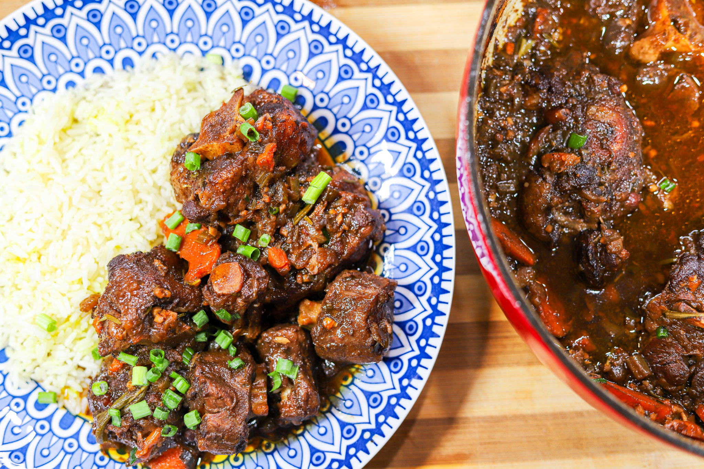

Oxtail Stew

Description
This oxtail stew recipe is warm, hearty, savory and so comforting! It simmers away until the meat becomes fall off the bone tender. This beef oxtail is incredibly flavorful. Great for family dinners, cold winter nights, meal prep and leftovers!
Ingredients
- 12 ounces dried lima beans
- 4 pounds oxtails
- 2 large Vidalia onions, chopped
- 3 scallions, chopped
- 4 garlic cloves, smashed
- 1 bunch fresh thyme
- 2 tablespoons red pepper flakes
- 4 teaspoons hot paprika
- 2 bay leaves
- 2 tablespoons hot sauce
- 4 tablespoons gravy master
- 6 cups low-sodium beef broth
- 4 teaspoons tomato paste
- 2 tablespoons salt
- 2 cups rice
Steps
- In a large bowl, cover lima beans with water, cover with a towel and soak overnight.
- In a large pot, add oxtails, onions, scallions, garlic, thyme, red pepper, paprika, bay leaf, hot sauce, and gravy master and marinate at least 4 hours or overnight in the refrigerator, stirring occasionally.
- Add enough water to just cover the oxtails and bring the mixture to a boil. Lower to a simmer, cover and cook 2 hours. Every 30 minutes for 2 hours add 2 cups of water or broth, alternating, as necessary, to keep oxtails covered with liquid.
- At 2 hours, add the beans, tomato paste, and 2 more cups of beef broth and water, if needed. Bring to a boil then simmer uncovered 2 hours, skimming fat off top and stirring occasionally. In the last 1/2 hour of cook time, season with 2 tablespoons salt. Serve with rice.
- Rinse rice 3 times to remove starch. Put rice in a medium saucepan. Fill saucepan with enough water to cover the rice by 1/2-inch or measure by placing your thumb tip on the rice and filling the pot with water until the water reaches the middle of your thumbnail. Bring rice to a simmer, cover and cook until tender and liquid is evaporated, about 15 minutes. Remove from heat and let rice stand another 5 minutes, covered.
Home